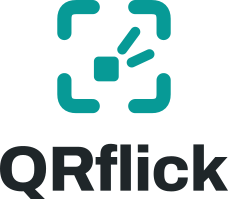
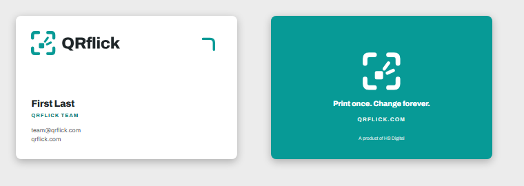
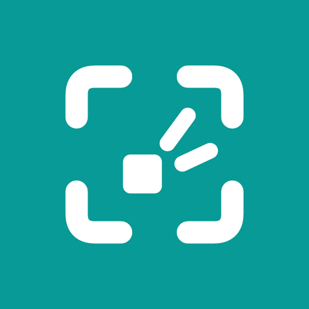
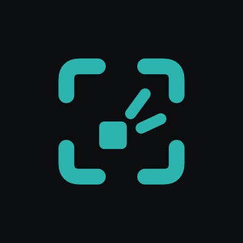

Brand guidelines · QRflick
Print once.
Change forever.
How QRflick looks, sounds and shows up. For designers, printers, partners and anyone making something with our name on it.
How QRflick looks, sounds and shows up. For designers, printers, partners and anyone making something with our name on it.
QRflick is a QR code you can change after it's printed. You print once and change where it points from your phone. Your codes keep working even if you stop paying.
People who print things and hate reprinting them.
Stop paying elsewhere and the code dies on 500 flyers.
Edit anytime. Free plan forever. Your codes are yours.
Four corners of a scanner frame, one data module and two motion strokes: the code changing. Always use the files in logo/. Never retype the wordmark.
The four corners of the camera viewfinder.
One square of the code: the clear-space unit.
Two strokes: the destination changing.
QRflick in Archivo 800, drawn as vectors.
Always written QRflick: capital Q and R, lowercase “flick”. Never “QR Flick”, “Qrflick” or “QRFlick”.
Choose the version that suits the space and the background. Never create new versions outside this system.

Keep a free area around the logo equal to X: the height of the data module (the small square) × 2, on every side.
Below 24 mm, use the mark on its own. At small sizes the Teal Deep version reads better than Teal.
To keep the logo recognisable, never modify it.
Teal marks what matters: the code, the action, the change. Everything else is neutral. Aim for about 10% teal on any layout.
Print the code itself in Ink or Teal Deep on white. Plain Teal can scan poorly on cheap paper.
Body text: Ink or Slate on Paper or white. On Teal use white only, 14 pt or bigger.
Ask for a proof. Match Teal to Pantone 7716 C (closest match, check the proof).
Free on Google Fonts · 400 500 600 700 800
Fallback: Helvetica Neue, Arial
Everything: headlines, body text, buttons and the wordmark. Contrast comes from weight and size, not a second font.
Archivo everywhere. Contrast comes from weight and size.
Headlines in sentence case. Caps only for small labels.
Archivo 800, white on a Night panel at 85%, max 6 words per card.
Helpful, quick and a little cheeky. Never corporate, never pushy.
Always tú, never usted. Like talking across the counter.
One idea per sentence. If it needs a comma, try a full stop.
Plain words, a wink allowed. Never a joke at the customer's expense.
A QR you can change, edit, scan, your code, free, no reprinting.
“Dynamic” (explain it the first time), “solution”, “platform”, “empower”, “synergy”.
Faceless, natural, close-up. The QR and the phone are the heroes. No stock smiles, no studio light.
Keep text 250 px from the top and bottom of a 1080 × 1920 frame (the app UI covers it).
12–25 s. Cut on every scan beep.
Real room sound + scan beep. Music low or off.
instagram, tiktok, linkedin, youtube, facebook, print
social, bio, story, flyer, partner, email
w + week number + topic, lowercase, hyphens: w04-menu

| Item | Content |
|---|---|
| A4 letter | Horizontal logo top left, Teal frame corner top right · footer: team@qrflick.com · qrflick.com · A product of HS Digital |
Every piece comes in Spanish and English, in stationery/. Cards with the team’s real details are in the team repo only.



| Folder | Contents |
|---|---|
logo/svg · logo/png | Every logo version · SVG and transparent PNG 512–4096 px |
icons | favicon.ico / .svg, app icons, site.webmanifest |
social | Avatars, Open Graph, LinkedIn, X, Facebook, YouTube covers |
profile | Business profile (PDF and text) |
stationery | Business card (print PDF), A4 letterhead and email signature |
Print once. Change forever.
qrflick.com · team@qrflick.com
instagram.com/qrflick · facebook.com/qrflick · tiktok.com/@qrflick
A product of HS Digital · hsdigital.es